Three fixes on the accepted drafts: brows on every Bruiser frame, palette contrast for Hornet and Bruiser, a half mark on the gum tube. All numbers are in numbers.txt; reasoning and doubts are in README.md.
24 frames redrawn: 22 had no brows, 2 had one brow slanted the wrong way. The other 39 frames are pixel-identical to the accepted brow frames. Read back from the sheet: the near-eye brow is complete in 63 of 63 frames; the far-eye brow is dark or behind the gum bubble in 63 of 63. Largest brow move between neighbouring frames of a clip: 1 px.
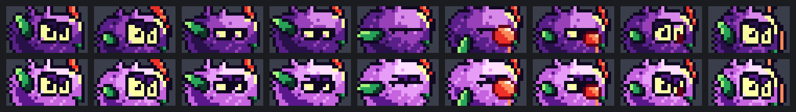
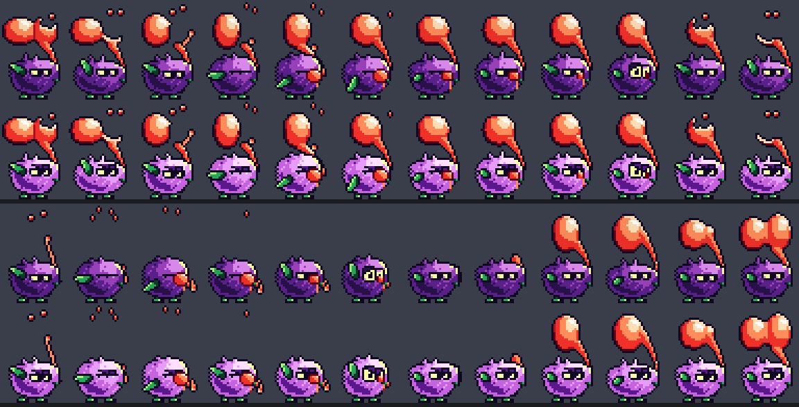
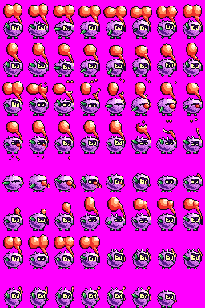
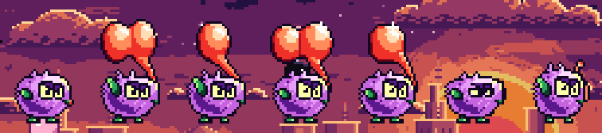
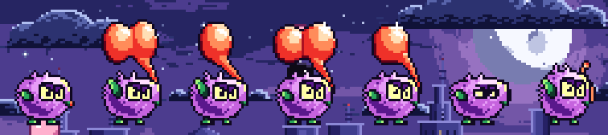
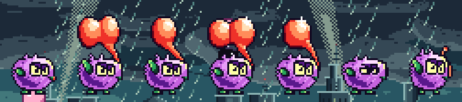
Old row on top, new row below. Order in each row: player 1, A Hornet, B Bone, C Bruiser, computer flier.
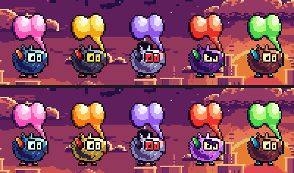
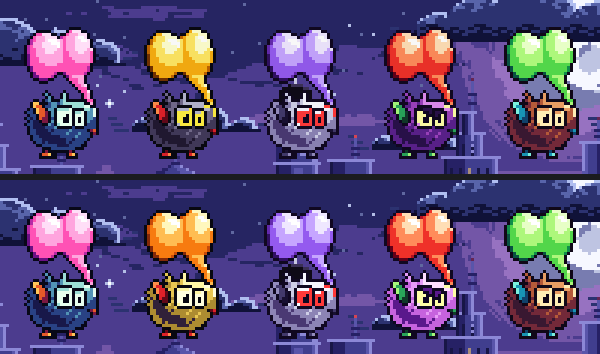
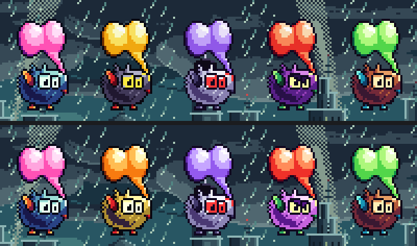
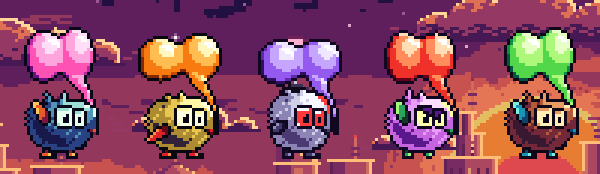
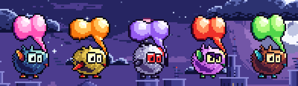
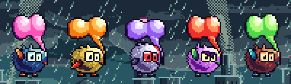
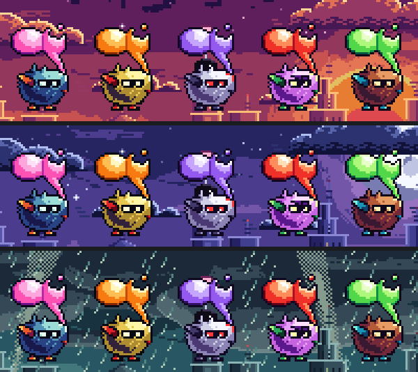
| Rival | Mood | Body contrast old | new | Outline contrast old | new | Colour distance to sky old | new |
|---|---|---|---|---|---|---|---|
| A Hornet | dusk | 1.54 | 2.22 | 2.81 | 2.81 | 37 | 70 |
| A Hornet | moon | 1.22 | 2.80 | 2.23 | 2.23 | 31 | 102 |
| A Hornet | storm | 1.15 | 2.97 | 2.10 | 2.10 | 18 | 69 |
| B Bone | dusk | 1.95 | 2.05 | 2.75 | 2.74 | 41 | 42 |
| B Bone | moon | 2.46 | 2.59 | 2.18 | 2.17 | 35 | 36 |
| B Bone | storm | 2.61 | 2.75 | 2.05 | 2.05 | 35 | 36 |
| C Bruiser | dusk | 1.50 | 2.11 | 2.75 | 2.74 | 47 | 52 |
| C Bruiser | moon | 1.19 | 2.66 | 2.18 | 2.17 | 18 | 40 |
| C Bruiser | storm | 1.12 | 2.82 | 2.05 | 2.05 | 61 | 77 |
Contrast is the luminance ratio against the median sky pixel of scene rows 16 to 95 (1.00 is none). Sky medians: dusk (148, 55, 92), moon (76, 60, 142), storm (53, 72, 85).
| Rival | Against | Body distance old (weighted mean) | new | Mid tone old | new |
|---|---|---|---|---|---|
| A Hornet | player 1 | 23.4 | 74.3 | 22 | 97 |
| A Hornet | computer | 37.1 | 47.9 | 34 | 63 |
| B Bone | player 1 | 27.5 | 28.7 | 31 | 32 |
| B Bone | computer | 47.2 | 48.3 | 47 | 48 |
| C Bruiser | player 1 | 41.3 | 49.8 | 32 | 53 |
| C Bruiser | computer | 58.4 | 63.8 | 56 | 66 |
5 fix cells in a row (icon plus four tube cells), 13 unique tiles, 11 colours, all from the HUD font palette (slots 1, 4, 5, 6, 7, 8, 9, 10, 11, 13, 15). Eight fill steps and empty; the gold bar sits on the seam between tube cells 2 and 3.
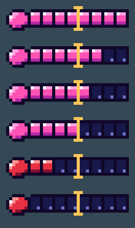
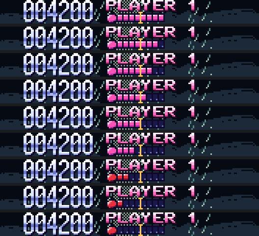
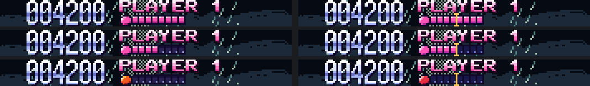
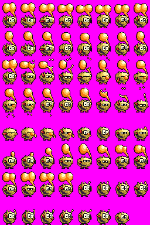